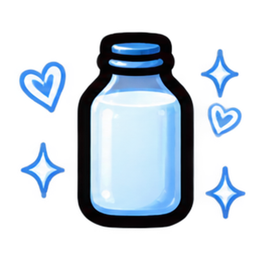

🥛 Лови команду !ловлю!
СОНЕЧКА СЕЙЧАС ЗАПУСТИТ МОЛОКО
😠🐐
🐐
💗
💞
💗Сонечка💗

DonationAlerts
Использует тот же вход, что и виджет рулетки (если уже логинился там — входить заново не нужно).
не подключено
Ловля молока (ведёт бот в чате)
Саму команду в чате слушает отдельный Twitch-бот (не этот виджет) — он и начисляет литры. Значения ниже должны совпадать с тем, что настроено у бота.
Просьбы за молочко (ведёт бот в чате)
Тоже слушает бот, не этот виджет — значения ниже только для подсказки зрителям и должны совпадать с настройками бота (env `REQUEST_COMMAND`/`REQUEST_COST`). Зритель пишет команду и текст просьбы, бот списывает литры с его баланса и просьба всплывает баннером на экране.
Расположение
Источник в OBS должен быть на весь холст (например 1920×1080) — иначе заливка молоком не займёт весь экран, а Сонечка всё равно встанет в нужное место за счёт отступов.
Звук
Действия по донату
Сонечка реагирует, если в сообщении доната есть одно из ключевых слов (через запятую) и сумма не меньше минималки ниже. Эффект пропорционален сумме доната: даже минимальный донат даёт небольшой эффект, а при сумме от максимальной и выше — эффект полный.
Рост и молоко
Кормление и поглаживание наполняют сытость/счастье. Дойка наполняет отдельную синюю шкалу (🧪 на карточке) и каждый раз немного снижает счастье и сытость. Когда шкала дойки доходит до 100% — появляется бидон молока, и шкала обнуляется.
Кешбек донатеру на баланс молочка (!молочко/!просьба) за сам факт доната на дойку — отдельно от того, что он задонатил, и от того, что поймают в чате при заливке.
Голод и грусть без донатов
Падает плавно и постепенно, не рывками. Например, 6.25 — это полное похудение/погрустнение из максимума за 16 часов (100 / 16 = 6.25).
Если донат приходит на уже полную (или почти полную) полоску, перелив не пропадает — вместо этого именно эта полоска какое-то время падает медленнее.
Фразы Сонечки
Заливка молоком
Ловля молока чатом (команда «!ловлю») происходит один раз — именно в момент большой заливки, не на каждой дойке. Поймать может столько человек, сколько было доек в этом цикле (первые по очереди в чате).
Просьбы на весь экран (покорми / подои / погладь)
Она выскакивает на весь экран и просит именно то, что ей сейчас нужно: мало сытости — просит покормить, мало счастья — просит погладить, обе полоски почти полные — просит подоить. Если всё в порядке — в этот раз просто промолчит и подождёт следующей проверки.
Нытьё в чат Twitch
Когда наверху выскакивает каприз (голодная/грустная/просит подоить) и донатов давно не было — бот Сонечки пишет про это прямо в чат, с подсказкой что задонатить. Нужен настроенный и запущенный бот (bot/README.md) и прокси-URL выше.
Подсказка над головой
Время от времени всплывает над карточкой с советом, что писать в донат. Молчит, пока недавно были донаты — появляется только когда долго было тихо.
Статистика
Топ донатеров на молоко
Топ по балансу молочка (л)
Тест
Экспорт / импорт настроек
Чтобы перенести настройки Сонечки (включая Twitch-канал и действия) между браузером и OBS: «Экспорт» → скопировать → вставить в поле ниже внутри OBS (режим Interact) → «Импорт». Вход в DonationAlerts переносится отдельно вместе с виджетом рулетки.